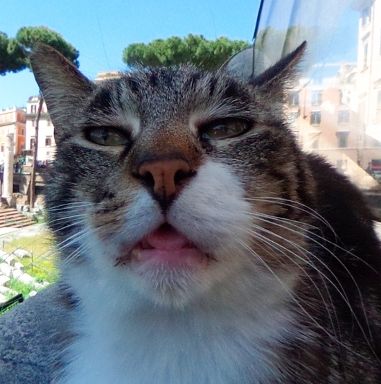
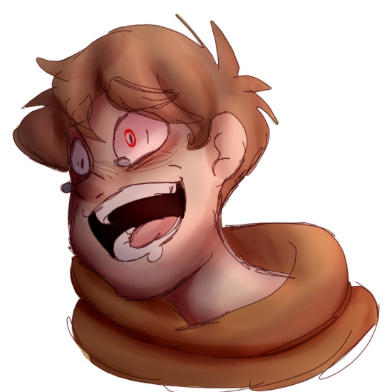
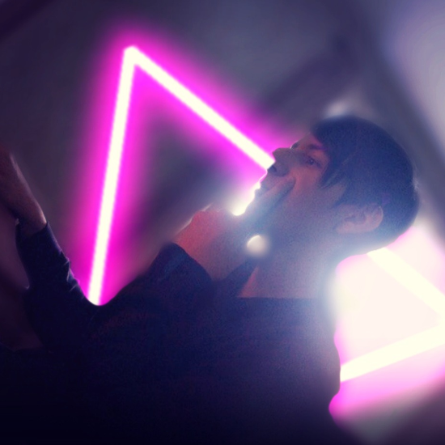

ВКАНТАКТИ
новасти
луди
абзор
прегласит
помащ
выхад
Мая строница
Маи фотачки
Маи деалоги
Маи новасти
Поша Дураф
на саите ●
мои статус - всигда на саите
Напесать сабщение
Дабавить в друзя
Друзя Поши
3 другафа
Москем Реманаф

Егор Иванов

Егор Чуприн
Господин Кто

Ян Двачевский
Давид Оганян
фатаграфи Поши
1 фатаграфия
групы Пошы
1 група
Чюприн блять
Запеси Поши